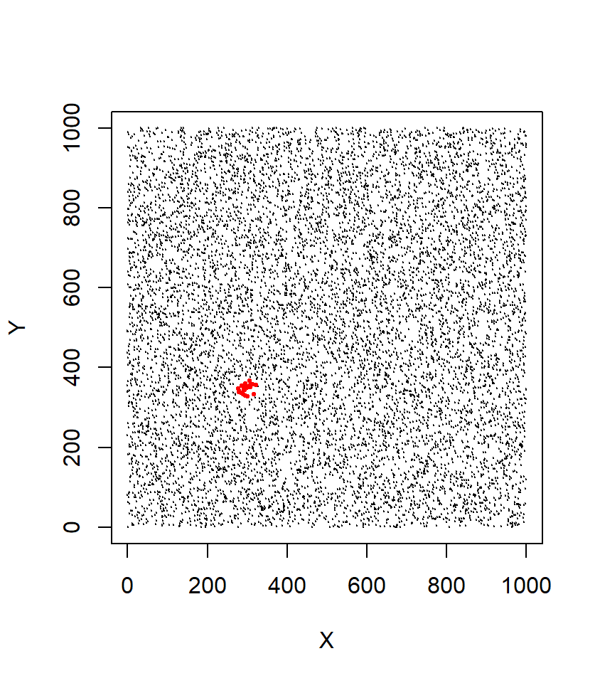
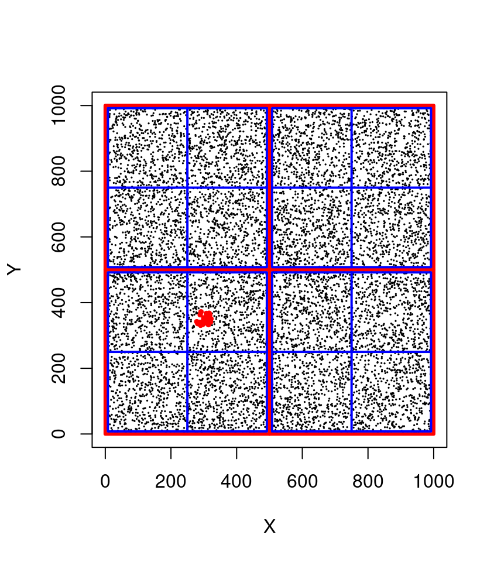
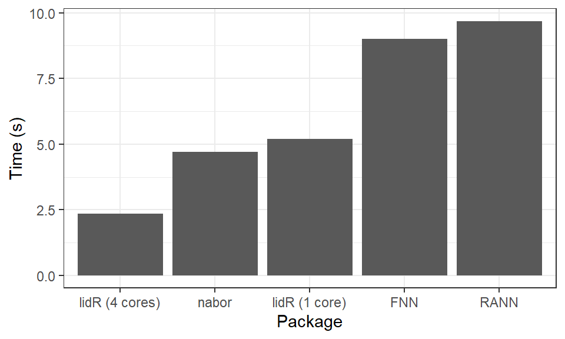

18 Spatial indexing
Spatial indexing is a key feature for performing spatial queries over a large point cloud. Any search for points of interest in the absence of indexing would require a “sequential scan” of every point - this could take a lot of time. In brief, spatial indexing organizes data into a search structure that can be quickly traversed to find specific records. Some algorithms would take unreasonable amounts of time to complete without spatial indexing.
18.1 Introduction to spatial indexes
This section presents a layman overview of how spatial indexing works. If the reader is already knowledgeable about spatial indexing, they can skip this section.
Imagine we have a lidar point cloud with 1 million points (sounds like alot… but it isn’t!). We want to query all points that fall within the extent of a circle centered on the coordinates p = c(300, 350) with a radius (R) of 25 meters. This is a typical query made thousands of times per second by many algorithms including the local maximum filter (section 7.1.1) to locate individual trees. Without spatial indexing, the method consists of computing the distance to p for every single point. This is called a ‘sequential scan’, and it means that the computation for distance and comparisons must be conducted 1,000,000 times each.
In R we can write:
p = c(300, 350)
R = 25
X = runif(1e4, 0, 1000)
Y = runif(1e4, 0, 1000)
query = sqrt((X - p[1])^2 + (Y - p[2])^2) < R
Xq = X[query]
Yq = Y[query]
This is what the filter_poi() function does. It a non-specialized function that enables querying points of interest (POI) based on their attribute values (including non-spatial queries such as Intensity > x).
Now imagine we want to perform 1,000,000 queries like that for 1,000,000 different points. That translates to 1,000,000 x 1,000,000 = 1 billion operations. This does not scale-up and quickly becomes unrealistic (or at least dramatically slow).
With a spatial index, the points are organized in such a way that the computer does not need to perform all the comparisons. In a quadtree, for example, the point cloud can be subdivided in 4 quadrants that are themselves subdivided in four quadrants and so on hierarchically (see figure below).

In this example we can immediately exclude 75% of the points (750,000 points) in 4 operations at the top level (in red). The bounding box of our query being [275,325]x[325,375] we know that the POIs do not belong in top-left quadrant ([0,500] x [500,1000]) nor in top-right quadrant ([500,1000] x [500,1000]) nor in bottom-right quadrant. At the second level (in blue) in 4 more operations we can exclude another 75% of the remaining points to search only in one quadrant. At this stage we can perform a sequential scan on only 1/16th of the points (i.e. 62,500 points) meaning that we discarded 937,500 points in 8 operations! Consequently our query is (roughly) 16 times faster and could be even faster yet with more subdivision levels. In lidR a typical quadtree has 8 levels i.e. the space is subdivided in (28)2 = 65,536 quadrants.
As we can see, spatial indexing provides a way to dramatically speed-up many common spatial queries using discs, rectangles, polygons, 2D, 3D and so on. Different types of spatial indexes exist for different purposes but in all cases the use of a spatial index is not free and comes at the cost of greater memory usage.
18.2 Spatial indexes for LAS objects
18.2.1 Overview
lidR makes use of spatial indexes in many functions and can choose different types of spatial indexes on-the-fly. So far, the book only presented the function readLAS() (see section 2) but the package has some variations of readLAS() named readALSLAS(), readTLSLAS(), readUAVLAS() and so on that enable the registration of a point cloud type allowing lidR to adequately choose the most appropriated spatial indexing method to perform a given computation as fast as possible.
As an example we can use the TLS point cloud pine_plot.laz from the TreeLS package.
First we read the file with readLAS(), which considers the point cloud to be ALS because lidR was originally designed for ALS and by legacy readLAS() from version <= 3.1 behaves optimally for ALS. In the second case we use readTLSLAS() to inform lidR that this point cloud was sampled with a terrestrial device.
In the following test we can see that the computation time was reduced from ~2.5 sec to ~1.3 sec by registering the proper point type. Improvements may range from 2 to 10 times faster depending on the point cloud and the method used.
file <- system.file("extdata", "pine_plot.laz", package="TreeLS")
las <- readLAS(file, select='xyz')
tls <- readTLSLAS(file, select='xyz')
system.time(segment_shapes(las, shp_plane(k = 15), "Coplanar"))
#> user system elapsed
#> 3.45 0.01 0.28
system.time(segment_shapes(tls, shp_plane(k = 15), "Coplanar"))
#> user system elapsed
#> 2.25 0.00 0.17This works for each method that implies many sequential spatial queries.
In the following example we can observe a ~8 fold processing time reduction.
system.time(point_metrics(las, r = 1, ~length(Z)))
#> user system elapsed
#> 7.48 0.00 7.48
system.time(point_metrics(tls, r = 1, ~length(Z)))
#> user system elapsed
#> 0.87 0.00 0.87Now lets try with an ALS point cloud. We can see that it’s better to read an ALS point cloud as ALS rather than as TLS (~2 fold difference). This is because registering the correct point cloud type enables the selection of the optimal spatial indexing algorithm internally.
als = readALSLAS("data/ENGINE/catalog/tiles_338000_5238500_1.laz")
tls = readTLSLAS("data/ENGINE/catalog/tiles_338000_5238500_1.laz")
system.time(classify_noise(als, sor()))
#> user system elapsed
#> 7.25 0.50 0.58
system.time(classify_noise(tls, sor()))
#> user system elapsed
#> 11.76 0.09 0.86Take away: It is always a good idea to use the functions
readALSLAS(),readTLSLAS(),readDAPLAS(), and so on introduced inlidR v3.1.0.
There are however caveats resulting from using the optimal read*LAS() function that may not guarantee optimal processing performance.
All functions do not use spatial indexing or do not use the spatial index framework of
lidR. For example, thekriging()function is based on thegstatpackage.The choice of spatial index relies on some assumptions that may not be met in specific point clouds. The internal dispatch is designed to work with ‘typical’ point clouds under some assumptions. An ALS point-cloud is typically spatially large (1 km² or more) with little
Zdispersion (0 to 40 meters) relative to theXYdispersion (0 to 1000 meters). On the contrary, a TLS point cloud is typically spatially narrow (~3000 m²) with larger variations inZrelative toXY.
read*LAS() should be sufficient for most use cases but for some specific cases users can manually choose which spatial index is best suited. We cover this in the next section.
18.2.2 Spatial indexes and selection strategies
lidR currently has 4 spatial indexes: a grid partition, a voxel partition, a quadtree and an octree. Each has its own pros and cons.
Grid partition and quadtree are 2D indexes while voxel partition and octree are 3D indexes. They are all able to perform any kind of spatial query similarly. This is why it doesn’t matter if the point cloud is read with readALSLAS() or readTLSLAS(). The result will be the same. However their efficiency depends on the point cloud type and the query type. This is why using the proper read*LAS() function can matter.
18.2.2.1 ALS strategies
For ALS we use a 2D index even for 3D queries.
Indeed, an ALS point cloud is ‘mostly 2D’ because more than 99% of the dispersion is in XY. When querying the knn of a given point (3D query) from a 2D index the vast majority of the points are discarded on a 2D basis. The remaining sequential scan occurs only on a very tiny fraction of the data set. This is also true for a 3D index but querying a 3D spatial index is slower and thus in lidR our 2D indexes perform best for ALS. A grid partition is used by default because it is often faster than a quadtree because ALS points are uniformly distributed on XY.
The following example demonstrates how to manually register a spatial index and compare the computation times for a quadtree and an octree.
18.2.2.2 TLS strategies
For TLS we use a 3D index because the points are almost evenly distributed in XYZ and thus a 2D query does not allow for discarding a large fraction of the points - the sequential scan remains important. An octree is used because points are expected to be not uniformly distributed on XYZ.
file <- system.file("extdata", "pine_plot.laz", package="TreeLS")
las <- readLAS(file, select='xyz')
index(las) <- "quadtree"
system.time(classify_noise(las, sor()))
#> user system elapsed
#> 2.47 0.00 0.24
index(las) <- "octree"
system.time(classify_noise(las, sor()))
#> user system elapsed
#> 0.96 0.02 0.0818.2.2.3 DAP and UAV strategies
For digital photogrammetry and UAV data we apply the same rules as TLS. When encountering a data set that does not follow these rules, it may be optimal to manually select a spatial index. This is the case of the data set seen in chapter 13.2.1, which is an ALS data set but in practice it’s a small subset in which we can no longer say that more than 99% of the point dispersion is in XY only. In that sense it’s more of a TLS ish point cloud. But in the meantime the points are uniformly spread on XY because it’s actually an ALS data set. Thus making 3D queries using a 3D index most viable. Let’s try it:
las <- readLAS("data/chap11/building_WilliamsAZ_Urban_normalized.laz")
index(las) <- "gridpartition"
system.time(segment_shapes(las, shp_plane(k = 20), "planar", filter = ~Classification != LASGROUND))
#> user system elapsed
#> 3.87 0.03 0.31
index(las) <- "voxelpartition"
system.time(segment_shapes(las, shp_plane(k = 20), "planar", filter = ~Classification != LASGROUND))
#> user system elapsed
#> 4.27 0.02 0.35We see that both tests are almost equal, and that octree is slower. But one may find limit cases where its worth it to perform manual selection and thus lidR allows for overwriting the default rules. More details in help("lidR-spatial-index").
18.2.3 C++ API
For more advanced users and developers, the lidR spatial index framework is provided as header-only C++ classes meaning that users can link to lidR to develop R/C++ applications using lidR spatial indexes. If the reader is not comfortable with the terms C++, Rcpp, header-only, external pointer and other C++ related concepts, we understand! You can skip this section, which is dedicated to advanced users and package developers who want to develop complex and efficient tools.
For the purpose of this example we will create a function clip_disc() similar to clip_circle() available in lidR. clip_circle() performs a sequential scan and is thus not suitable to perform many queries in a loop. The function clip_disc() on the contrary will take advantage of spatial indexing.
There is only one C++ class to know named SpatialIndex. It has one constructor that accepts an S4 class and has two public members knn and lookup.
First we can write a C++ function that returns a pointer on a SpatialIndex. Here we are using an external pointer because it’s simple to write, and implies fewer lines of code. We can however also imagine taking advantage of Rcpp modules.
// [[Rcpp::depends(lidR)]]
#include <SpatialIndex.h>
using namespace Rcpp;
using namespace lidR;
// [[Rcpp::export]]
XPtr<SpatialIndex> spatial_index(S4 las) {
SpatialIndex* idx = new SpatialIndex(las);
XPtr<SpatialIndex> p(idx, true);
return p;Now we can instantiate a SpatialIndex at the R level.
las = readLAS("data/ENGINE/catalog/tiles_338000_5238500_1.laz")
index = spatial_index(las)
index
#> <pointer: 0x000001983ecf5110>What has been created here is either a grid partition, a voxel partition, a quadtree or an octree depending on which readLAS() function was used to read the files or depending on the spatial index that was manually registered.
Then we can write the C++ side of the query.
// [[Rcpp::export]]
IntegerVector filter_disc_with_index(SEXP xptr, double xc, double yc, double r) {
XPtr<SpatialIndex> tree(xptr);
Circle circ(xc, yc, r);
std::vector<PointXYZ> pts;
tree->lookup(circ, pts);
IntegerVector ids(pts.size());
for(int i = 0 ; i < pts.size(); i++) { ids[i] = pts[i].id; }
return ids + 1; // C++ is 0-indexed
}And the R side of the query
clip_disc = function(las, index, xcenter, ycenter, radius) {
ii <- filter_disc_with_index(index, xcenter, ycenter, radius)
return(las[ii])
}Now we can make a query and verify that both functions return the same points.
sub1 = clip_disc(las, index, 338200, 5238585, 10)
sub2 = clip_circle(las, 338200, 5238585, 10)
sub1
#> class : LAS (v1.0 format 1)
#> memory : 78.6 Kb
#> extent : 338190, 338209.9, 5238575, 5238595 (xmin, xmax, ymin, ymax)
#> coord. ref. : WGS 84 / UTM zone 19N
#> area : 305.5 m²
#> points : 1.1 thousand points
#> density : 3.75 points/m²
#> density : 2.92 pulses/m²
sub2
#> class : LAS (v1.0 format 1)
#> memory : 78.6 Kb
#> extent : 338190, 338209.9, 5238575, 5238595 (xmin, xmax, ymin, ymax)
#> coord. ref. : WGS 84 / UTM zone 19N
#> area : 305.5 m²
#> points : 1.1 thousand points
#> density : 3.75 points/m²
#> density : 2.92 pulses/m²While there is no gain with a single query because of the overhead of creating an index, it is indispensable to perform many successive queries. In the following we perform 50 queries in a loop.
n = 50
x = runif(n, 338000, 338500)
y = runif(n, 5238500, 5239000)
system.time(for (i in 1:n) u = clip_circle(las, x[i], y[i], 10))
#> user system elapsed
#> 2.61 0.44 3.08
system.time(for (i in 1:n) u = clip_disc(las, index, x[i], y[i], 10))
#> user system elapsed
#> 0.25 0.01 0.27For more functionalities one can look at the source code of SpatialIndex where we can see there are actually 2 constructors and 5 members including 2D and 3D knn, 2D and 3D knn with maximum radius and lookup that is templated to allow queries within any kind of user-defined shapes.
The source code of many lidR functions such as lmf() or detect_shape() might be useful resources as well.
SpatialIndex(const Rcpp::S4 las);
SpatialIndex(const Rcpp::S4 las, const std::vector<bool>& filter);
template<typename T> void lookup(T& shape, std::vector<PointXYZ>& res);
void knn(const PointXY& p, const unsigned int k, std::vector<PointXYZ>& res);
void knn(const PointXYZ& p, const unsigned int k, std::vector<PointXYZ>& res);
void knn(const PointXY& p, const unsigned int k, const double r, std::vector<PointXYZ>& res);
void knn(const PointXYZ& p, const unsigned int k, const double r, std::vector<PointXYZ>& res);18.2.4 Benchmark
lidR’s spatial index framework is very fast, especially when large point clouds are used. In the following we compare how fast lidR searches for the 10-nearest neighbours of every point in a 2.3 million point ALS point cloud relative to the RANN, FANN and nabor packages.

We see that it is competitive with the very fast libnabo library but does more than libnabo since it also performs range queries such as point in discs, rectangles, cylinders, triangles, polygons.
We don’t know any R library providing such capability to produce benchmark comparisons. Moreover, lidR leverages the C++ classes to allow the creation of efficient third party applications. This functionality is heavily used in the lidRplugins package.
18.3 Spatial index for LAS files
Previous sections were dedicated to explaining spatial indexing for LAS objects i.e. point clouds read with readLAS() and loaded in memory. This section focuses on spatial indexing for LAS files i.e. point clouds stored in las/laz files and not (yet) loaded in memory. The problem of spatial queries at read time is the same but the solution is different because it was developed in an independent context.
Fast spatial queries are made possible by indexing the .las or .laz files with .lax files. A .lax file is a tiny file associated with a .las or .laz file that spatially indexes the points. This file type was created by Martin Isenburg in LAStools. For a better understanding of how it works one can refer to a talk given by Martin Isenburg about lasindex. In short it uses quadtree.
By adding .lax files along with your .las/.laz files it is possible to make fast 2D queries without reading the whole file. The best way to create a .lax file is to use laxindex from LAStools. It is a free and open-source part of LAStools. If you cannot or do not want to use LAStools the rlas package has a function to creates lax files but lasindex should be preferred.
The gain is really significant and transparent for users. If you have a .lax file it will be used.
Here we test with 150 queries from the same indexed and a non-indexed LAScatalog with 400 files:
indexed = readLAScatalog("LiDAR with lax/")
noindex = readLAScatalog("LiDAR no lax/")
clip_circle(indexed, xc, yc, radius = 12)
#> 45 sec
clip_circle(noindex, xc, yc, radius = 12)
#> 4 secIf the reader did not skip section 18.2.3 they might have noticed that clip_circle() can use a spatial index with a LAScatalog but not with a LAS. This is because they behave very differently internally and rely on two independent mechanisms. With a LAScatalog it inherits the capabilities of the library used to read the files while with a LAS object nothing has been implemented (yet) for taking advantage of spatial indexing at the R level (but the section above provide the solution).
It’s easy to guess that every clip_something() function can take advantage of spatial indexing with .lax files but the LAScatalog processing engine also makes heavy usage of such features. Users can significantly reduce the processing time by loading a buffer faster. Indeed loading a buffer implies spatial queries. This topic is covered by the vignette: Speed-up the computations on a LAScatalog.
#> NULL